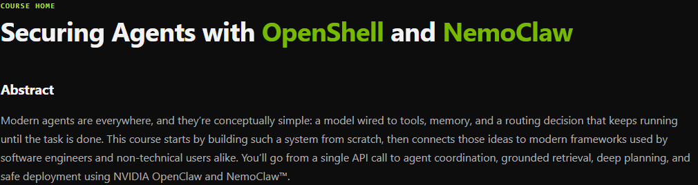
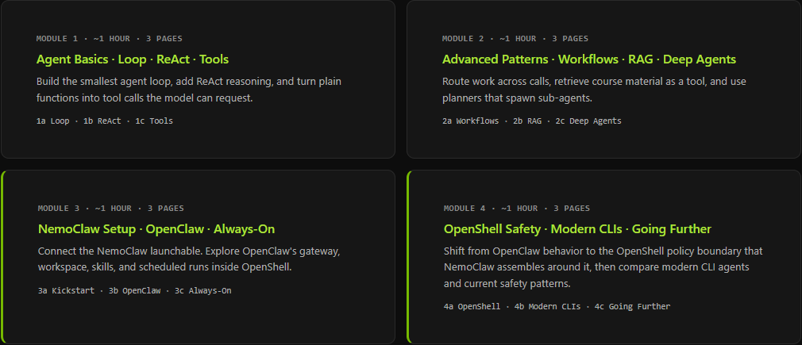
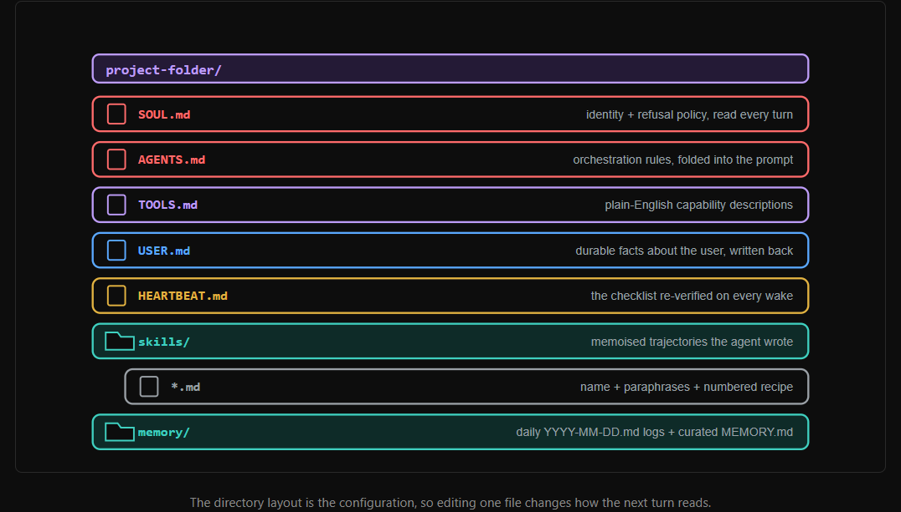
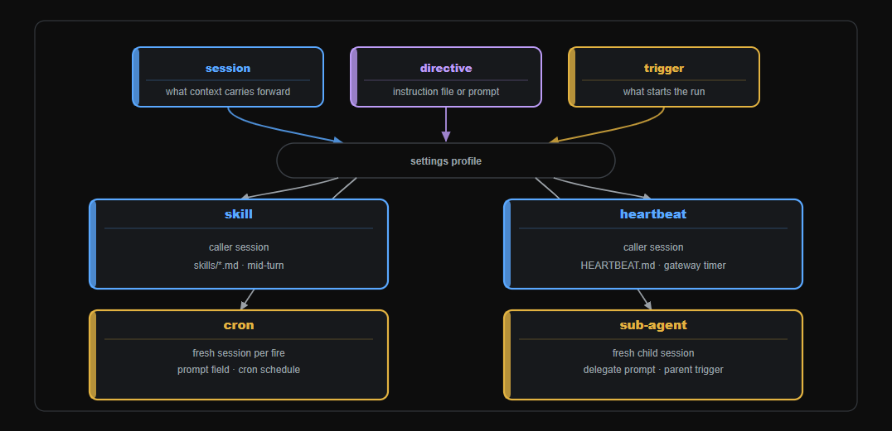
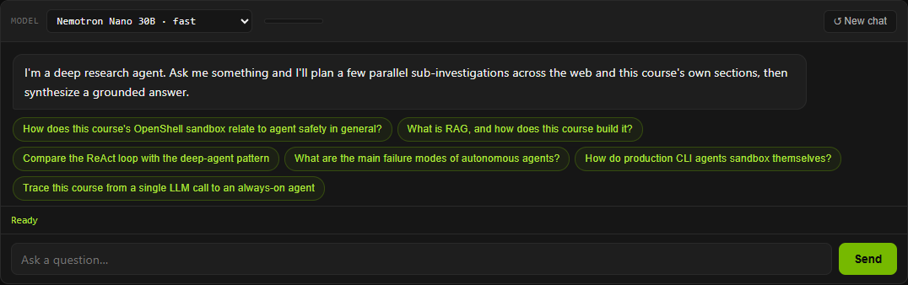
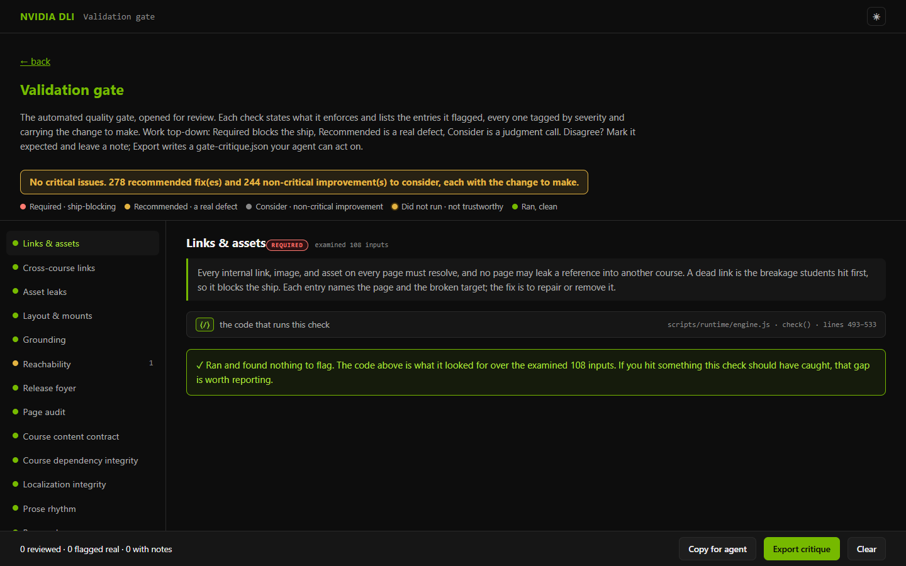
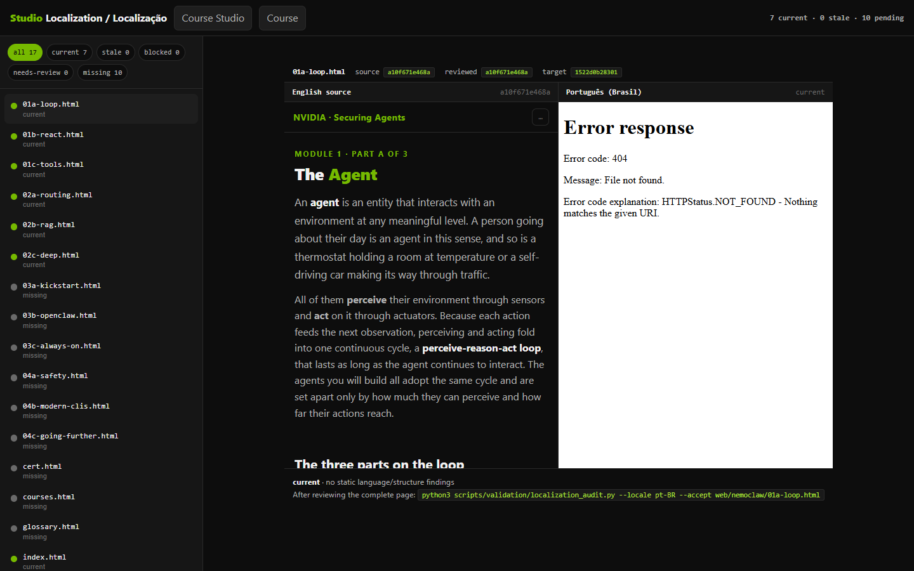

Securing Agents with OpenShell and NemoClaw
Repository tour for course reviewers, developers, and release owners
Build the agent, then add runtime controls
Learners begin with a model-and-tools loop, then run a persistent agent inside OpenShell policy boundaries.

- The course defines each mechanism before naming frameworks.
- Runnable artifacts accompany the explanation.
- Modules 3 and 4 add runtime containment after construction.
The course progresses through four modules
Each module reuses earlier mechanisms and changes orchestration, state, or enforcement.

- Module 1 covers the loop, ReAct, and tools.
- Module 2 covers workflows, retrieval, and deep research.
- Module 3 covers NemoClaw setup, OpenClaw, and scheduled operation.
- Module 4 covers OpenShell safety, CLI comparisons, and next steps.
Module 1 exposes the agent loop
Learners inspect the boundary between model decisions and code execution at every step.
By the end of Module 1, the learner can point to who chooses an action and who performs it.
Module 2 controls context and result flow
Part 2a defines the workflow boundary; Parts 2b and 2c apply it to fixed retrieval and dynamic research.
The shared concern is context and result flow; Parts B and C implement it with fixed and dynamic structures.
Module 3 moves workflows into OpenClaw
Learners connect the gateway, inspect workspace context, then add skills and scheduled runs.


Module 4 turns reach into testable limits
Learners probe OpenShell, compare agent defaults, then carry the controls into deployment decisions.
The module turns wider agent reach into controls that can be tested, compared, and reviewed.
Browser artifacts keep implementation inspectable
The page shows the task, model, controls, output, and adjacent RunCell source.

- Learners can inspect or adapt the example without a frontend toolchain.
- Run, Stop, Reset, errors, and source disclosure share one page contract.
- The browser form also supports workflow prototypes and reviewable artifacts.
Protected controls gate every code change
Issues accept proposals. Required CI and human review gate code before merge or release.
Validation reports show rules and findings
Reviewers can see what ran, what it examined, why the rule exists, and where its code lives.

- Required checks block publication or runtime contracts.
- Recommended findings identify defects with a concrete repair.
- Consider findings remain visible for human judgment.
Each failure needs matching evidence
Static, mutation, browser, and protected-host checks cover different failures.
SKILL.html routes work to local contracts
The hierarchy shows people and agents which files, rules, and checks apply before editing.
web/nemoclaw/course pages, browser runtime, figures, materials, and course-specific rulesscripts/validation/deterministic gates, mutation tests, browser audits, and suite provenancescripts/build/standalone bundles, Pages projection, release packaging, and deck generationdocs/human process, staging, governance, release, and this repository tourLocalization Studio makes source drift visible
The interface shows accepted source hashes, current pages, pending coverage, and side-by-side rendered output.

- Localized prose stays in a sparse overlay while all languages share the runtime.
- Source drift becomes a review state instead of a silent mismatch.
- Locale checks catch prose that reads poorly for Brazilian learners and developers.
Branch previews provide review evidence
The three lanes differ in ref selection, artifact retention, permissions, and release meaning.
Reviewers start from the artifact they own
The course, implementation, validation evidence, and release controls link to one another.
web/nemoclaw/index.htmlFollow the learner route and run the browser artifacts.web/nemoclaw/COURSE_CANON.mdCheck objectives, prerequisites, progression, and teaching evidence.SKILL.htmlRead the nearest contract, declare blast radius, and run focused checks.validation.html + RELEASE_STATUS.jsonReview the tested SHA, findings, deployment evidence, and publication state.